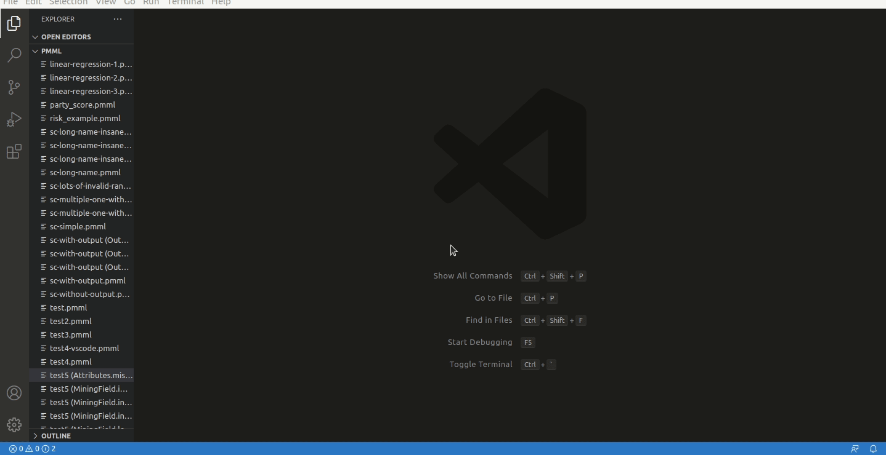

Kogito Tooling 0.8.5 Released!
We have just launched a fresh new Kogito Tooling release! On the 0.8.5 release, we made many improvements and bug fixes.
We are also happy to announce a new PMML Scorecard Editor and, also, that our editors are now available on Eclipse Theia Upstream (built from theia master).
This post will give a quick overview of what is included on this release.
PMML Scorecard Editor (alpha) hits VSCode Market Place
We are happy to announce that we have a new VS Code extension: PMML Editor. It allows you to create and edit PMML 4.4 (.pmml) Scorecard files.

This new editor is in the alpha stage, and we are looking for feedback from the community. We hope you enjoy it!
Eclipse Theia and Open VSIX Store
Eclipse Theia is an extensible framework based on VS Code to develop full-fledged multi-language Cloud & Desktop IDE-like products with state-of-the-art web technologies. Recently, Theia’s team merged a PR, allowing support for CustomEditor API.
In practice, this means that from now on, our BPMN, DMN and editors can run on Eclipse Theia upstream (you can build it from theia master and run), take a look on this demo:
Eclipse Theia uses Open VSX Registry, and from now on, all our releases will also be available on Open VSX store.
New Features, fixed issues, and improvements
We also made some new features, a lot of refactorings and improvements, with highlights to:
New features:
Infrastructure
- KOGITO-204 – Implement a integration tests using Cypress for online channel
- KOGITO-4242 – Migrate VS Code Extension release job to new Jenkins instance
- KOGITO-4666 – Converge the CSS to avoid conflicts between PF3 and PF4
Editors
- FAI-362 – Score Cards: Integrate with VS Code channel
- KOGITO-3762 – Enable Bpmn and Dmn PR tests
- KOGITO-4627 – Run standalone tests with Chrome instead of Electron
Fixed issues in Kogito:
Infrastructure
- KOGITO-4628 – Fix running online editor integration tests in CI
Editors
- KOGITO-4257 – Importing and modeling decision models is too slow for productive modeling
- KOGITO-4265 – [DMN Designer] Decision Services – The parameters order in the properties panel is not correct
- KOGITO-4368 – DMN Editor wrong edge arrow tip connection on reopen
- KOGITO-4500 – [DMN Designer] DMN schema/model validation errors when model has AUTO-SOURCE or AUTO-TARGET connections
- KOGITO-4533 – Scesim assets are broken in VS Code extension
- KOGITO-4539 – [DMN Designer] DMN takes too long to open models with too many nodes
Further Reading/Watching
We had some excellent talks recently at the KIE youtube channel:
- Dev Nation Building successful business Java apps: How to deliver more, code less, and communicate better, by Alex;
- KieLive#26 How to embed DMN and BPMN editors in your own application, by Paulo;
- KieLive#25 Using VSCode to build and deploy services in a real-world decision scenario: COVID-19, by Adriel/
I would also like to recommend some recent articles:
- New enhancements on DMN Editor Decision Services Experience, by Guilherme;
- Modeling and Development of Decision Services: DMN with Kogito, by Matteo;
- 3 Steps to Author BPMN and DMN assets on GitHub Codespaces, by Eder.
Thank you to everyone involved!
I want to thank everyone involved with this release, from the excellent KIE Tooling Engineers to the lifesavers QEs and the UX people that help us look fabulous!

{kind=link}